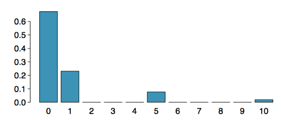

Estadística I
Clase 20: Variables Aleatorias
Universidad Central de Venezuela- Escuela de Economía. 2025-1
2025-07-08
Variables aleatorias
Una variable aleatoria es una cantidad numérica cuyo valor depende del resultado de un evento aleatorio.
- Usamos una letra mayúscula, como X, para denotar una variable aleatoria.
- Los valores de una variable aleatoria se denotan con una letra minúscula, en este caso x.
- Por ejemplo, \(P(X=x)\).
Tipos de Variables Aleatorias
Hay dos tipos de variables aleatorias:
- Variables aleatorias discretas: a menudo toman solo valores enteros.
- Ejemplo: Número de créditos, Diferencia en el número de créditos este período vs. el anterior.
- Variables aleatorias continuas: toman valores reales (decimales).
- Ejemplo: Costo de los libros este período, Diferencia en el costo de los libros este período vs. el anterior.
Esperanza
- A menudo estamos interesados en el resultado promedio de una variable aleatoria.
- A esto lo llamamos el valor esperado (media), y es un promedio ponderado de los posibles resultados.
\[\mu=E(X)=\sum_{i=1}^{k}x_{i}P(X=x_{i})\]
Valor esperado de una variable aleatoria discreta
En un juego de cartas, ganas $1 si sacas un corazón, $5 si sacas un as (incluyendo el as de corazones), $10 si sacas el rey de espadas y nada por cualquier otra carta que saques.
Escribe el modelo de probabilidad para tus ganancias y calcula tu ganancia esperada.
Valor esperado de una variable aleatoria discreta
En un juego de cartas, ganas $1 si sacas un corazón, $5 si sacas un as (incluyendo el as de corazones), $10 si sacas el rey de espadas y nada por cualquier otra carta que saques.
Escribe el modelo de probabilidad para tus ganancias y calcula tu ganancia esperada.
| Evento | X | \(P(X)\) | \(X \cdot P(X)\) |
|---|---|---|---|
| Corazón (no as) | 1 | \(\frac{12}{52}\) | \(\frac{12}{52}\) |
| As | 5 | \(\frac{4}{52}\) | \(\frac{20}{52}\) |
| Rey de espadas | 10 | \(\frac{1}{52}\) | \(\frac{10}{52}\) |
| Todas las demás | 0 | \(\frac{35}{52}\) | 0 |
| Total | \(E(X)=\frac{42}{52}\\=0.81\) |
Valor esperado de una variable aleatoria discreta (cont.)
A continuación se muestra una representación visual de la distribución de probabilidad de las ganancias de este juego:

Variabilidad
También estamos interesados a menudo en la variabilidad de los valores de una variable aleatoria.
\[\sigma^{2}=Var(X)=\sum_{i=1}^{k}(x_{i}-E(X))^{2}P(X=x_{i})\] \[\sigma=DT(X)=\sqrt{Var(X)}\]
Variabilidad de una variable aleatoria discreta
Para el ejemplo anterior del juego de cartas, ¿cuánto esperarías que varíen las ganancias de un juego a otro?
Variabilidad de una variable aleatoria discreta
Para el ejemplo anterior del juego de cartas, ¿cuánto esperarías que varíen las ganancias de un juego a otro?
| X | \(P(X)\) | \(X \cdot P(X)\) | \((X-E(X))^{2}\) | \(P(X)(X-E(X))^{2}\) |
|---|---|---|---|---|
| 1 | \(\frac{12}{52}\) | \(1\times\frac{12}{52}=\frac{12}{52}\) | \((1-0.81)^{2}=0.0361\) | \(\frac{12}{52}\times0.0361=0.0083\) |
| 5 | \(\frac{4}{52}\) | \(5\times\frac{4}{52}=\frac{20}{52}\) | \((5-0.81)^{2}=17.5561\) | \(\frac{4}{52}\times17.5561=1.3505\) |
| 10 | \(\frac{1}{52}\) | \(10\times\frac{1}{52}=\frac{10}{52}\) | \((10-0.81)^{2}=84.4561\) | \(\frac{1}{52}\times84.0889=1.6242\) |
| 0 | \(\frac{35}{52}\) | \(0\times\frac{35}{52}=0\) | \((0-0.81)^{2}=0.6561\) | \(\frac{35}{52}\times0.6561=0.4416\) |
| \(E(X)=0.81\) |
Variabilidad de una variable aleatoria discreta
Para el ejemplo anterior del juego de cartas, ¿cuánto esperarías que varíen las ganancias de un juego a otro?
| X | \(P(X)\) | \(X \cdot P(X)\) | \((X-E(X))^{2}\) | \(P(X)(X-E(X))^{2}\) |
|---|---|---|---|---|
| 1 | \(\frac{12}{52}\) | \(1\times\frac{12}{52}=\frac{12}{52}\) | \((1-0.81)^{2}=0.0361\) | \(\frac{12}{52}\times0.0361=0.0083\) |
| 5 | \(\frac{4}{52}\) | \(5\times\frac{4}{52}=\frac{20}{52}\) | \((5-0.81)^{2}=17.5561\) | \(\frac{4}{52}\times17.5561=1.3505\) |
| 10 | \(\frac{1}{52}\) | \(10\times\frac{1}{52}=\frac{10}{52}\) | \((10-0.81)^{2}=84.4561\) | \(\frac{1}{52}\times84.0889=1.6242\) |
| 0 | \(\frac{35}{52}\) | \(0\times\frac{35}{52}=0\) | \((0-0.81)^{2}=0.6561\) | \(\frac{35}{52}\times0.6561=0.4416\) |
| \(E(X)=0.81\) | \(V(X)=3.4246\) | |||
| \(DT(X)=\sqrt{3.4246}=1.85\) |
Combinaciones lineales
- Una combinación lineal de variables aleatorias X e Y está dada por \(aX+bY\) donde a y b son números fijos.
- El valor promedio de una combinación lineal de variables aleatorias está dado por \[E(aX+bY)=a\times E(X)+b\times E(Y)\]
Calculando la esperanza de una combinación lineal
En promedio, tardas 10 minutos por cada problema de estadística y 15 minutos por cada problema de química. Esta semana tienes 5 problemas de estadística y 4 de química asignados. ¿Cuál es el tiempo total que esperas dedicar a los deberes de estadística y física para la semana?
Calculando la esperanza de una combinación lineal
En promedio, tardas 10 minutos por cada problema de estadística y 15 minutos por cada problema de química. Esta semana tienes 5 problemas de estadística y 4 de química asignados. ¿Cuál es el tiempo total que esperas dedicar a los deberes de estadística y física para la semana?
\[E(E+E+E+E+E+Q+Q+Q+Q)=\\5\times E(E)+4\times E(Q)=\\5\times10+4\times15=\\50+60=\\110 \text{ min}\]
Combinación lineal
- La variabilidad de una combinación lineal de dos variables aleatorias independientes se calcula como: \(V(aX+bY)=a^{2}\times V(X)+b^{2}\times V(Y)\)
- La desviación estándar de la combinación lineal es la raíz cuadrada de la varianza.
- Nota: Si las variables aleatorias no son independientes, el cálculo de la varianza se complica un poco más y está fuera del alcance de este curso.
Combinaciones lineales
La desviación estándar del tiempo que tardas en cada problema de estadística es de 1.5 minutos, y es de 2 minutos para cada problema de química. ¿Cuál es la desviación estándar del tiempo que esperas dedicar a los deberes de estadística y química para la semana si tienes 5 problemas de estadística y 4 de química asignados?
Combinaciones lineales
La desviación estándar del tiempo que tardas en cada problema de estadística es de 1.5 minutos, y es de 2 minutos para cada problema de química. ¿Cuál es la desviación estándar del tiempo que esperas dedicar a los deberes de estadística y química para la semana si tienes 5 problemas de estadística y 4 de química asignados?
\[V(E+E+E+E+E+Q+Q+Q+Q)=\\V(E)+V(E)+V(E)+V(E)+V(E)+V(Q)+V(Q)+V(Q)+V(Q)=\\5\times V(E)+4\times V(Q) =\\5\times1.5^{2}+4\times2^{2}=\\27.25\]
Práctica
Un juego de casino cuesta $5 jugarlo. Si sacas primero una carta roja, entonces puedes sacar una segunda carta. Si la segunda carta es el as de corazones, ganas $500. Si no, no ganas nada, es decir, pierdes tus $5.
¿Cuáles son tus ganancias (o pérdidas) esperadas al jugar este juego?
Recuerda: ganancia (o pérdida) = premios - costo.
- una pérdida de 10¢
- una pérdida de 25¢
- una pérdida de 30¢
- una ganancia de 5¢
Práctica
Un juego de casino cuesta $5 jugarlo. Si sacas primero una carta roja, entonces puedes sacar una segunda carta. Si la segunda carta es el as de corazones, ganas $500. Si no, no ganas nada, es decir, pierdes tus $5. ¿Cuáles son tus ganancias (o pérdidas) esperadas al jugar este juego? Recuerda: ganancia (o pérdida) = premios - costo.
| Evento | Premio | Ganancia: X | \(P(X)\) | \(X\times P(X)\) |
|---|---|---|---|---|
| Roja, A♥ | 500 | \(500-5=495\) | \(\frac{26}{52}\times\frac{1}{51} \approx0.0098\) | \(495\times0.0098\approx4.85\) |
| Otro | 0 | \(0-5=-5\) | \(1-0.0098=0.9902\) | \(-5\times0.9902 \approx-4.95\) |
| Total | \(E(X) \approx-0.10\) |
- una pérdida de 10¢
Juego justo
Un juego justo se define como un juego que cuesta tanto como su pago esperado, es decir, la ganancia esperada es 0.
¿Crees que los juegos de casino en Las Vegas cuestan más o menos que sus pagos esperados?
Si esos juegos costaran menos que sus pagos esperados, significaría que los casinos estarían perdiendo dinero en promedio, y por lo tanto no podrían pagar todo esto:
Simplificando variables aleatorias
Las variables aleatorias no funcionan como las variables algebraicas normales: \(X+X\ne2X\)
| Suma de Variables | Múltiplo de una Variable |
|---|---|
| \(E(X+X)=E(X)+E(X)\) | \(E(2X)=2E(X)\) |
| \(=2E(X)\) | |
| \(V(X+X)=Var(X)+Var(X)\) | \(Var(2X)=2^{2}Var(X)\) |
| (Asumiendo Independencia) | |
| \(=2Var(X)\) | \(=4Var(X)\) |
Simplificando variables aleatorias
Las variables aleatorias no funcionan como las variables algebraicas normales: \(X+X\\ne2X\)
| Suma de Variables | Múltiplo de una Variable |
|---|---|
| \(E(X+X)=E(X)+E(X)\) | \(E(2X)=2E(X)\) |
| \(=2E(X)\) | |
| \multicolumn{2}{ | c |
| \(V(X+X)=Var(X)+Var(X)\) | \(Var(2X)=2^{2}Var(X)\) |
| (Asumiendo Independencia) | |
| \(=2Var(X)\) | \(=4Var(X)\) |
¿Sumar o multiplicar?
Una empresa tiene 5 Lincoln Town Cars en su flota. Los datos históricos muestran que el costo anual de mantenimiento para cada automóvil es en promedio de $2,154 con una desviación estándar de $132. ¿Cuál es la media y la desviación estándar del costo total anual de mantenimiento para esta flota?
¿Sumar o multiplicar?
Una empresa tiene 5 Lincoln Town Cars en su flota. Los datos históricos muestran que el costo anual de mantenimiento para cada automóvil es en promedio de $2,154 con una desviación estándar de $132. ¿Cuál es la media y la desviación estándar del costo total anual de mantenimiento para esta flota?
Nota que tenemos 5 autos, cada uno con el costo de mantenimiento anual dado \((X\_{1}+X\_{2}+X\_{3}+X\_{4}+X\_{5})\), no un auto que tuvo 5 veces el costo de mantenimiento anual dado \((5X)\).
¿Sumar o multiplicar?
Una empresa tiene 5 Lincoln Town Cars en su flota. Los datos históricos muestran que el costo anual de mantenimiento para cada automóvil es en promedio de $2,154 con una desviación estándar de $132. ¿Cuál es la media y la desviación estándar del costo total anual de mantenimiento para esta flota?
Nota que tenemos 5 autos, cada uno con el costo de mantenimiento anual dado \((X\_{1}+X\_{2}+X\_{3}+X\_{4}+X\_{5})\), no un auto que tuvo 5 veces el costo de mantenimiento anual dado \((5X)\).
\(E(X\_{1}+X\_{2}+X\_{3}+X\_{4}+X\_{5})=E(X\_{1})+E(X\_{2})+E(X\_{3})+E(X\_{4})+E(X\_{5})\)
¿Sumar o multiplicar?
Una empresa tiene 5 Lincoln Town Cars en su flota. Los datos históricos muestran que el costo anual de mantenimiento para cada automóvil es en promedio de $2,154 con una desviación estándar de $132. ¿Cuál es la media y la desviación estándar del costo total anual de mantenimiento para esta flota?
Nota que tenemos 5 autos, cada uno con el costo de mantenimiento anual dado \((X\_{1}+X\_{2}+X\_{3}+X\_{4}+X\_{5})\), no un auto que tuvo 5 veces el costo de mantenimiento anual dado \((5X)\).
\(E(X\_{1}+X\_{2}+X\_{3}+X\_{4}+X\_{5})=E(X\_{1})+E(X\_{2})+E(X\_{3})+E(X\_{4})+E(X\_{5})\) $=5E(X)=5,154=\(10,770\)
¿Sumar o multiplicar?
Una empresa tiene 5 Lincoln Town Cars en su flota. Los datos históricos muestran que el costo anual de mantenimiento para cada automóvil es en promedio de $2,154 con una desviación estándar de $132. ¿Cuál es la media y la desviación estándar del costo total anual de mantenimiento para esta flota?
Nota que tenemos 5 autos, cada uno con el costo de mantenimiento anual dado \((X\_{1}+X\_{2}+X\_{3}+X\_{4}+X\_{5})\), no un auto que tuvo 5 veces el costo de mantenimiento anual dado \((5X)\).
\(E(X\_{1}+X\_{2}+X\_{3}+X\_{4}+X\_{5})=E(X\_{1})+E(X\_{2})+E(X\_{3})+E(X\_{4})+E(X\_{5})\) $=5E(X)=5,154=\(10,770\)
\(Var(X\_{1}+X\_{2}+X\_{3}+X\_{4}+X\_{5})=Var(X\_{1})+Var(X\_{2})+Var(X\_{3})+Var(X\_{4})+Var(X\_{5})\)
¿Sumar o multiplicar?
Una empresa tiene 5 Lincoln Town Cars en su flota. Los datos históricos muestran que el costo anual de mantenimiento para cada automóvil es en promedio de $2,154 con una desviación estándar de $132. ¿Cuál es la media y la desviación estándar del costo total anual de mantenimiento para esta flota?
Nota que tenemos 5 autos, cada uno con el costo de mantenimiento anual dado \((X\_{1}+X\_{2}+X\_{3}+X\_{4}+X\_{5})\), no un auto que tuvo 5 veces el costo de mantenimiento anual dado \((5X)\).
\(E(X\_{1}+X\_{2}+X\_{3}+X\_{4}+X\_{5})=E(X\_{1})+E(X\_{2})+E(X\_{3})+E(X\_{4})+E(X\_{5})\) $=5E(X)=5,154=\(10,770\)
\(Var(X\_{1}+X\_{2}+X\_{3}+X\_{4}+X\_{5})=Var(X\_{1})+Var(X\_{2})+Var(X\_{3})+Var(X\_{4})+Var(X\_{5})\) $=5V(X)=5^{2}=\(87,120\)
¿Sumar o multiplicar?
Una empresa tiene 5 Lincoln Town Cars en su flota. Los datos históricos muestran que el costo anual de mantenimiento para cada automóvil es en promedio de $2,154 con una desviación estándar de $132. ¿Cuál es la media y la desviación estándar del costo total anual de mantenimiento para esta flota?
Nota que tenemos 5 autos, cada uno con el costo de mantenimiento anual dado \((X\_{1}+X\_{2}+X\_{3}+X\_{4}+X\_{5})\), no un auto que tuvo 5 veces el costo de mantenimiento anual dado \((5X)\).
\(E(X\_{1}+X\_{2}+X\_{3}+X\_{4}+X\_{5})=E(X\_{1})+E(X\_{2})+E(X\_{3})+E(X\_{4})+E(X\_{5})\) $=5E(X)=5,154=\(10,770\)
\(Var(X\_{1}+X\_{2}+X\_{3}+X\_{4}+X\_{5})=Var(X\_{1})+Var(X\_{2})+Var(X\_{3})+Var(X\_{4})+Var(X\_{5})\) $=5V(X)=5^{2}=\(87,120\)
$DT(X_{1}+X_{2}+X_{3}+X_{4}+X_{5})=\(295.16\)